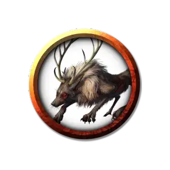

Лиса химера
Chimeric Fox
Крошечный Зверь, без мировоззрения

Класс Доспеха 13
Хиты 2 (1к4)
Скорость 30 футов, копая 5 футов
| мод | спас | ||
|---|---|---|---|
| СИЛ | 2 | −4 | −4 |
| ЛОВ | 16 | +3 | +3 |
| ТЕЛ | 11 | +0 | +0 |
| мод | спас | ||
|---|---|---|---|
| ИНТ | 3 | −4 | −4 |
| МДР | 12 | +1 | +1 |
| ХАР | 6 | −2 | −2 |
Навыки Восприятие +3, Скрытность +5
Чувства тёмное зрение 60 футов, пассивное Восприятие 13
Опасность 0
Бонус мастерства +2
Особенности
Острый слух. Лиса совершает с преимуществом проверки Мудрости (Восприятие), полагающиеся на слух.
Созданная химера. Лиса обладает мехом, который меняет цвет в соответствии с окружающей обстановкой, что даёт ей преимущество на проверки Ловкости (Скрытность).
Действия
Укус. . Рукопашная атака оружием: +5 к попаданию, досягаемость 5 фт., одно существо. Попадание: 1 колющего урона.
Описание
Белые арктические лисы долины Ледяного Ветра живут в норах и адаптированы к холодной погоде. Они рыщут по окраинам Десяти Городов и близлежащим лесам в поисках пищи, охотятся на зайцев или воруют рыбу. Эти пугливые существа избегают контактов с гуманоидами, только чвинга иногда используют их в качестве верховых животных.